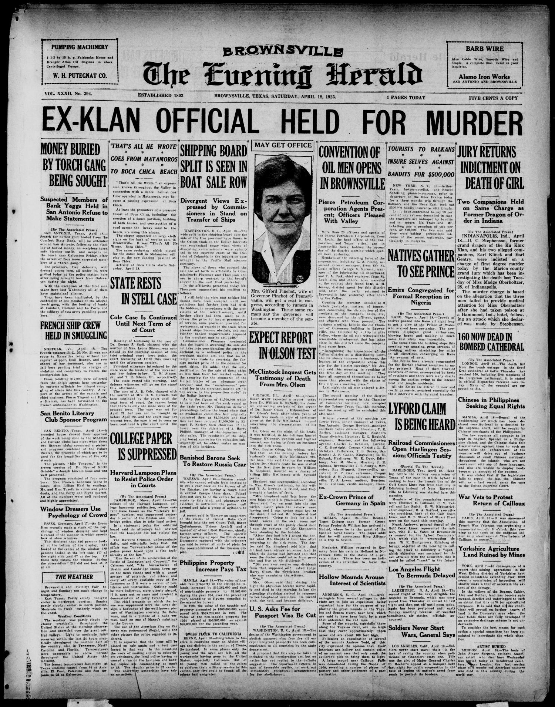
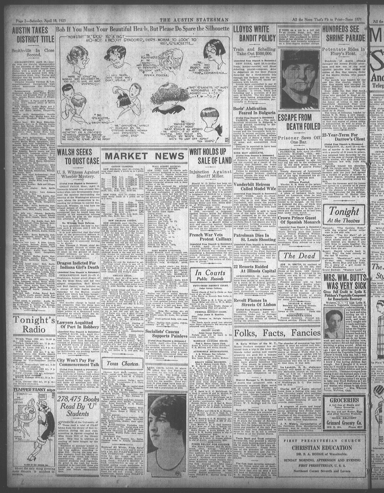

HN HN-442 · April 18, 1925 · Crime, Law & Justice > Law Enforcement, Prisons & Investigations > Criminal investigations
Source: Indianapolis Times, p. 1 — original page; Indiana Historical Bureau.
Report: The front page announced D. C. Stephenson was charged with murder in the death of Madge Oberholtzer; it discussed the ex-Klan leader's house, related fire inquiry, other defendants, and court pleas.
Assessment: On April 18, these were criminal charges, not yet a verdict. The later historical and court record establishes Stephenson's second-degree murder conviction and life sentence in November (HN-445). Reporting this sequence separately prevents the subsequent outcome from being falsely read back into the indictment.
Identity-review candidate peers: HN-445:Algorithmic
Authentic scans retrieved from The Portal to Texas History (University of North Texas). Article crops are located using the archive's own OCR word coordinates and rendered at native crop resolution; page scans are reduced-size access renditions. No images were generated, mocked, or retouched.


Not yet acquired. Queued for provider-specific acquisition testing (see source-acquisition manifest).
URL (preserved verbatim): https://newspapers.library.in.gov/?a=d&d=IPT19250418.1.1
Saved research report: Historical_Newspaper_Event_Research_428-452_2026-10-23.md
Evidence note: A newspaper report means a historical publication made a claim; it does not establish that claim as fact. Contemporary reporting is separated from later scholarly context and our own assessment.